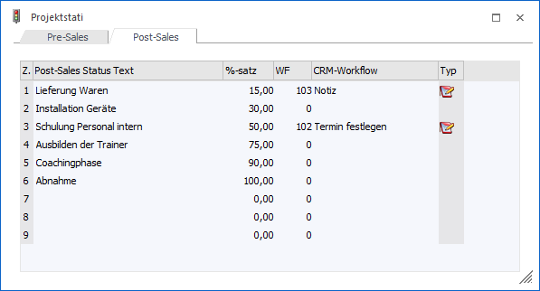
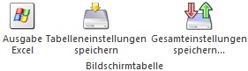

In dem Register "Post-Sales" können die Post-Sales-Stati erfasst werden.

In der Tabelle können insgesamt 9 Stati für den Bereich "Post-Sales" definiert werden. Folgenden Spalten stehen hierbei zur Verfügung:
Ø Z.
An dieser Stelle wird die Nummer des Status angezeigt.
Ø Post-Sales Status Text
In dieser Spalte wird der Name des Status hinterlegt.
Ø %-Satz
An dieser Stelle kann der %-Satz des Fortschritts hinterlegt werden. Dieser wird bei der Auswahl des Status als Standardwert vorgeschlagen.
Ø WF
Durch die Hinterlegung eines Aktionsschritts oder eines Workflowstartpunkts wird bei der Speicherung einer Status-Änderung ein CRM-Fall erzeugt.
Hinweis
In WinLine START kann über den Menüpunkt "Vorlagen" - "Workflow-Vorlagen" pro Aktion bzw. pro Workflow definiert werden, ob beim Erzeugen des CRM-Falls ein Fenster zur Erfassung der Daten geöffnet werden soll oder ob die Felder automatisch laut Vorlage gefüllt werden sollen. Nähere Informationen diesbezüglich entnehmen Sie bitte dem Handbuch WinLine START, Kapitel "Workflow-Vorlagen".
Ø CRM-Workflow
An dieser Stelle wird der Name der Aktion bzw. des Workflows angezeigt.
Ø Typ
In dieser Spalte wird durch ein Icon darauf hingewiesen, ob es sich in der Spalte "WF" um einen Aktionsschritt oder einen Workflowstartpunkt handelt.
ü - Aktionsschritt
ü - Workflowstartpunkt
Tabellenbuttons

Ø Ausgabe Excel
Durch Anwahl des Buttons "Ausgabe Excel" wird der Inhalt der Tabelle nach Microsoft Excel übergeben.
Ø Tabelleneinstellungen speichern
Die Spalten einer Tabelle können grundsätzlich an beliebige Positionen verschoben, bzw. in der Breite entsprechend angepasst werden. Durch Anwahl des Buttons "Tabelleneinstellungen speichern" werden die Einstellungen benutzerspezifisch gespeichert und bei dem nächsten Aufruf des Programmpunktes wieder vorgeschlagen.
Ø Gesamteinstellungen speichern
Im Gegensatz zu "Tabelleneinstellungen speichern" können mit "Gesamteinstellungen speichern" mehrere Tabellenaufbauten gespeichert und nach Wunsch geladen werden. Zusätzlich werden Sonderfunktionen der Tabelle (z.B. "Spalte gruppieren") ebenfalls bei der Speicherung bedacht.